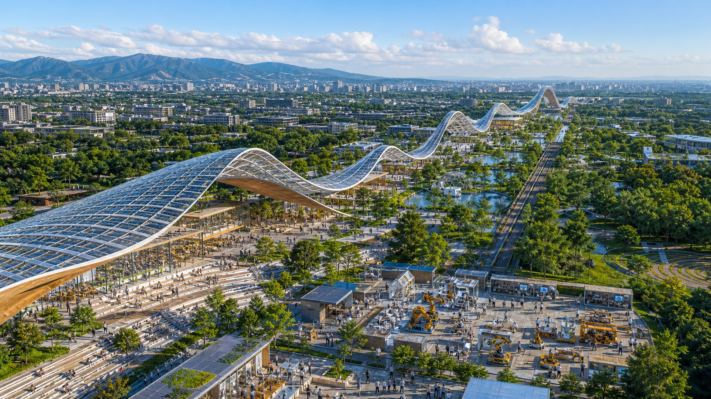
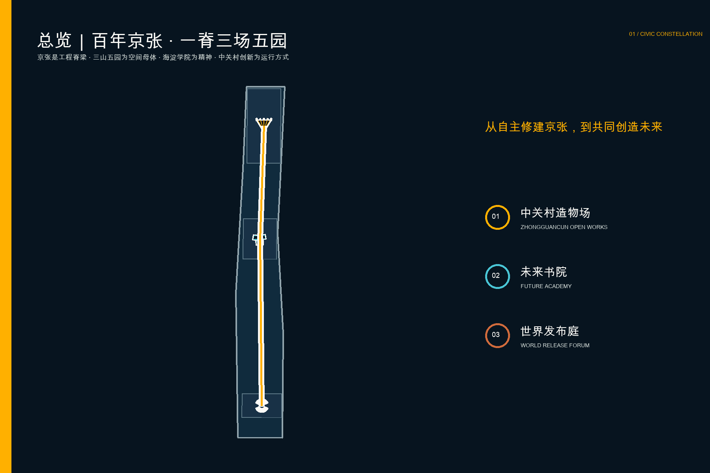
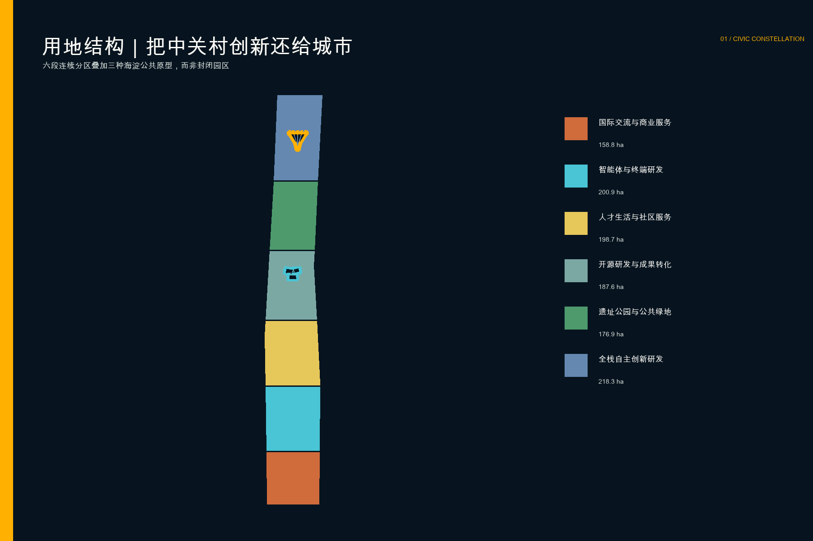
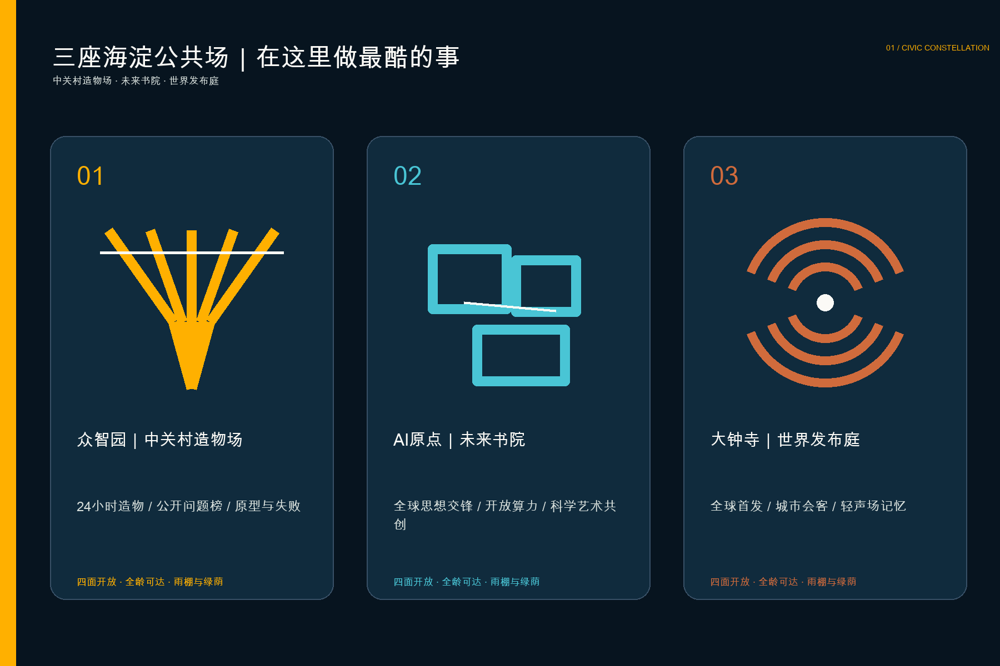
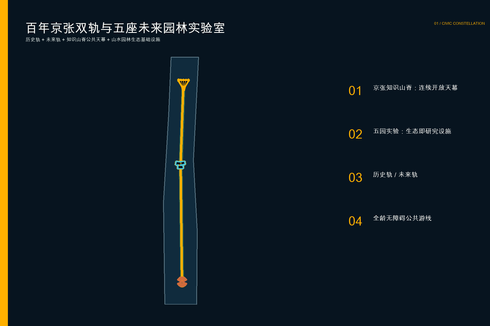
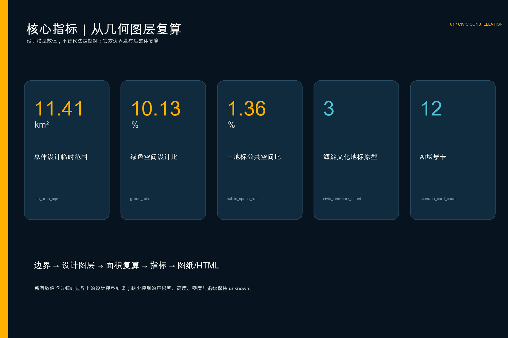

京张文明星座 / THE CIVIC CONSTELLATION
以一条公共星脉串联三座可进入的城市公共环：不以最高塔楼制造地标，而以制造、共同体与交流的日常公共生活形成世界级辨识度。
京张文明星座 / THE CIVIC CONSTELLATION
THE MONUMENT IS THE COMMONS. 地标，就是共同体。 这里不竞逐最高的塔，而建造全世界最开放、最有创造力、也最有人情味的共同空间。

设计依据与资料清单
方案首先服从公告确定的三层范围、三处重点区域和五类功能，不把公开资料缺口包装成“已知”。总体设计暂沿用场地包的临时粗略边界，计算面积约 11.41 平方公里；众智园、AI原点和大钟寺同样使用 provisional polygons。它们只用于概念生成、空间复核和参赛表达，不是法定红线、道路边界或审批依据。正式边界到位后，九类几何图层、全部面积和图纸必须整体复算。来源 空间数据
依据链由公告、agent 任务书、场地包、来源登记表和现行专业标准组成。公告提供任务与面积量级；任务书提出开放协作、场景卡、人才画像、朝圣地标、品牌与长期运营要求；场地包区分 official、background 与 provisional；标准矩阵则约束用地分类、城市设计深度、无障碍、生成式AI和人工复核。控规、权属、道路红线、管线、消防、防洪和文保控制缺失，因此容积率、高度、密度、退线均维持 unknown，不用设计者猜测值制造确定性。来源 标准
主视觉为本次原创生成的情绪图，表达“公共环被真实使用”的空间气质，不作为现状照片或精确效果承诺；五张规划图来自本包 GeoJSON 与 metrics 自动绘制。图片、文字、数据和代码的授权边界详见版权声明与 sources.json。来源
三层范围工作框架
统筹研究范围回答“为什么全球创新者愿意来到这里”：海淀的优势不只在技术密度，更在大学、企业、社区、遗址与真实城市问题彼此靠近。总体设计范围回答“怎样让创新被城市看见”：把京张遗址公园理解为一条约十公里的公共星脉，连续组织步行、骑行、绿荫、测试、展示和日常服务。重点区域回答“哪三个地方先成为经典”：众智园制造之环、AI原点共同体之环、大钟寺交流之环。深度
“一脉三星”不是另画一条伪红线，而是一个可复核的设计层级。星脉是一条全龄、全天候、可无障碍连续的公共路线；三星是三座四面开放、无门票、可穿越的公共环。三环不追求外形相同：北环更像可工作的花园工坊，中环更像可讨论与生活的市民论坛，南环更像与轨道和城市商业连接的世界会客厅。它们共同遵守阴影、水、座椅、安静边缘、无障碍与人工服务兜底六条公共底线。空间数据
图层关系保持清楚：用地分区完整覆盖临时总体边界；公共环、绿心和慢行线作为专题叠加；低层开放亭廊只是空间原型，不代表批准建筑；三期范围表达试点顺序，不暗示资金或建设承诺。评审者可以从正文追到图层、指标、A3/A0 和离线网页。指标

统筹研究范围产业与未来城市研究
文明星座把“世界级AI生态”解释为五种彼此靠近的能力：源头研究可以遇见真实问题，开源贡献可以获得公共声誉，初创产品可以低成本验证，成熟企业可以与城市和国际伙伴协作，居民则能分享创新带来的便利而不被当作数据原料。最稀缺的基础设施不是另一座封闭办公楼，而是可信、好用、能偶遇不同人的公共共同体。由此形成“发现问题—共同制造—公开验证—城市采用—全球交流”的空间闭环。来源
六个国际案例提供方法而非造型复制：新加坡 one-north 证明研发、教育、企业与生活服务需要混合；Barcelona 22@ 证明工业遗产更新必须兼顾知识产业、住房、设施与绿地；MIT Kendall Square 证明实验室之下要有活跃首层、住房和公共开放空间；Aalto Otaniemi 证明森林、艺术、实验和可达性本身就是人才吸引力；Salford Rise 证明跨越道路障碍的公共连接可以把社区接入创新机会；London Old Oak 提醒创新地区应把全球机会转化为本地可分享的生活机会。京张的超越点，是把这些经验浓缩成三座有统一身份、却分别承担制造、共同体和交流的公共环。来源 来源
面向全球人才的城市体验不是“只工作更久”，而是能在同一天完成专注研发、偶遇合作者、展示半成品、散步运动、照顾家庭和独处恢复。文明星座以“可见的制造、可参与的讨论、可停留的自然、可负担的日常、可尊重的退出”作为人才体验准则。AI 只在有明确公共价值时进入空间，并提供无手机、无识别、有人值守的等价路径。来源
总体设计范围城市更新与控规深度城市设计
总体结构为六段连续用地带叠加一条公共星脉。南部面向大钟寺和轨道服务国际交流、智能体及终端企业；中南段配置人才生活与社区服务；AI原点周边强化开源研发、近校转化和公共发布；中北段以遗址公园与公共绿地保持连续；北部众智园承载全栈研发、标准共创和安全治理。分区严格裁切于临时边界且无重叠，为比较功能关系提供可复算模型，不构成法定用地性质调整。空间数据
更新方法坚持“先开边界、再补公共空间、后谈增量建设”。第一类动作是移除或柔化围栏、停车场和消极首层，形成可穿越界面；第二类是用轻量雨棚、共享桌、供电点、绿荫和无障碍坡道测试真实需求；第三类才是在权属、控规、交通和市政条件确认后，以保留、改造、置换或新建完成长期空间。提交中的 24 个左右亭廊基底只是三环尺度验证，层数、高度和总建筑规模保持待定。深度
控规深度的责任通过结构化文件体现：用地完整覆盖、建筑基底、道路中心线、绿地、公共空间、约束空集、分期与指标均可机读；不能确认的开发强度、红线和设施标准明确为 unknown。这样既给出足够深的空间主张，又不越过专业规划和工程审查边界。标准

重点区域详细设计
制造之环 / Ring of Making，众智园。 外径约 470 米的概念环带围绕可种植、可试验的绿心，八段开放亭廊分别容纳共享工坊、端侧设备测试、标准共创、安全红队、材料库、开放课堂、维修咖啡馆和公共看台。四个方向均可穿越，夜间保留安静通道。访客不是参观“完成品”，而能看到问题如何被提出、原型如何失败、标准如何共同形成。空间规模为设计参考，需在正式边界、清河与五环条件下深化。空间数据
共同体之环 / Ring of Commons，AI原点。 外径约 380 米，面向高校师生、初创团队、家庭与邻里。环带包含开源发布厅、公共代码与贡献档案、成果转化门诊、托育友好工作间、夜间自习、安静花园和社区议事厅。它把“原点”从单一产业符号变成任何人都能进入的城市起点：来到这里的人可以发布一个模型，也可以只接水、休息或参加社区活动。空间数据
交流之环 / Ring of Exchange，大钟寺。 外径约 300 米，强调轨道到达、四象限步行联系、国际路演、智能终端体验、媒体发布和城市夜生活。展览必须同时呈现成功、限制、能耗与人工责任；商业活动不得封闭整环。外缘是繁忙城市界面，内缘是水院与树阵，以声学、绿化和时间分区同时容纳盛会与安静停留。空间数据
三环共同构成可被记住的城市图像，却不是一次性形象工程。统一的是开放圆环、琥珀公共灯带和贡献坐标系统；不同的是场景、材料与节奏。每环设一个永久荣誉节点：制造之环记录可复用原型，共同体之环记录开源与公益贡献，交流之环记录跨国协作。贡献经过公开规则和人工审核，不以人脸识别或消费能力排序。深度

AI 创新生态、人才画像与 AI+ 场景
五类核心人物决定空间是否成立：全球研究者需要短期接入、安静专注和可信同行；开源维护者需要公开声誉、协作桌与长期档案；初创团队需要低成本试验、法务算力接口和失败展示权；周边居民需要日常通勤、绿荫、亲子与不被追踪；无障碍使用者和长者需要连续坡道、清晰触觉信息、人工帮助与数字退出。第六类“城市一线工作者”作为校验者，确保维护、保洁、安全和设备运营被纳入设计而非隐藏。标准
十二张场景卡以“对象—地点—数据—人工复核—退出机制”组织：01 公共问题悬赏；02 72小时原型桌；03 开源发布与签名档案；04 可解释慢行导航；05 无障碍断点共测；06 端侧节能算力驿站；07 安全红队开放日；08 近校成果转化门诊；09 多语种国际落地服务；10 社区AI服务值班台；11 失败博物馆与复盘夜；12 全球共同制造周。每个场景都允许参与者使用人工窗口或匿名方式，不把公共空间访问与注册账号绑定。来源
三项产业验证优先试行。A“公共端侧模型挑战”在制造之环测试能耗、延迟与安全，由专业团队与公众共同观察；B“开源到城市服务”在共同体之环将高校成果转译为可解释的小型公共服务，由人工责任人签字上线；C“世界演示夜”在交流之环要求企业展示产品同时公开限制、风险与申诉入口。试点成功标准不是人流越多越好，而是跨团队复用率、问题解决率、无障碍完成率、居民扰动投诉和人工接管质量。标准
AI治理采用最小数据原则：默认不做人脸识别，不为广告建立个人轨迹，不用黑箱评分决定公共资源。传感器只在必要时采集聚合数据，标明目的、保存期和责任主体；导航、活动安全和设施维护建议必须可解释、可关闭、可人工复核。空间中始终保留纸质导视、人工服务台与无设备路线。深度
用地、建筑规模与拆改留方案
六段用地分区是功能结构模型：国际交流与商业服务、智能体与终端研发、人才生活与社区服务、开源研发与成果转化、遗址公园与公共绿地、全栈自主创新研发。每段由临时边界切割并复算面积，用来检查南北角色和公共资源是否连续；正式用地代码、混合比例与开发强度须由后续控规和权属资料确认。标准
建筑采取“保留优先、可逆插入、开放首层、低碳适配”的设计建议。现状价值建筑在完成测绘、鉴定和权属核验前不做拆除结论；一般建筑优先通过首层打开、屋顶共享、立面遮阳和内部可变隔断改造；新增亭廊采用可拆、可维修构造，为三环提供连续雨棚与公共服务。几何文件只表达概念基底面积，建筑高度、容积率、密度、总规模、退线全部保持 unknown。指标
拆改留清单以单栋审计为前置：文化价值、结构安全、碳排、使用率、公共贡献、权属和工程代价七项同时评估。任何“经典”都不能靠不必要拆除获得；真正的辨识度来自旧铁路、树木、砖墙与新公共环之间精确而克制的并置。深度
交通、轨道、市政与公共服务设施
交通优先级依次为步行与轮椅、骑行、公共交通接驳、必要服务车辆、机动车。公共星脉连接三环，每座环自带无障碍闭合游线，并在正式道路和轨道资料到位后校核与五道口、清华东路西口、大钟寺站及跨五环节点的关系。线路为概念中心线，不代表道路红线；跨路设施必须经过交通、结构、消防和无障碍专业深化。空间数据
三环设置同一组公共服务底盘：饮水、厕所、储物、母婴与安静室、维修点、雨棚、遮阳、急救和人工咨询。数字层提供多语导视、拥挤提醒、无障碍路径和活动信息，但所有服务都有非数字等价入口。非机动车停车分散在环外缘，内部以慢行和应急通行为主；大型活动使用预约与分时机制，不把公园变成交通瓶颈。深度
市政策略采用可逆、可监测、可维护原则：亭廊预留电力、网络和端侧算力接口，雨水经绿心花园滞蓄，能源优先节能与分布式可再生系统。管线、供电容量、排水、防洪、消防和轨道保护条件均属缺失资料，当前只表达接口原则，不宣称工程可实施性。深度

蓝绿空间、公共空间与城市风貌
绿地不是建筑之间的剩余，而是文明星座的连续公共底盘。设计模型以约 72 米宽的概念绿廊串联三座环心花园，形成林下慢行、雨洪花园、开敞草地与安静生境的节奏；绿地设计比为 10.57%，只反映本方案专题图层在临时边界上的面积，不替代法定绿地率。指标
公共空间比 1.45% 只计算三座公共环的环带面积，刻意不把所有公园绿地重复计入。每环四面开放，设连续无障碍坡道、不同高度座椅、遮荫、饮水、照明、可触知信息和静音边缘。活动区与休息区以植物、水和高差温和分隔，避免用围栏制造“公共空间”。指标
城市风貌以“铁路的线、星座的环、北京院落的内外层次”为母题。旧砖、耐候钢、浅木与半透明光伏雨棚形成可维护材料谱系；琥珀色灯带只标记公共共享部分，不把整片城市变成屏幕。Logo 方向是一条细线穿过三个不封闭的圆，任何媒介上都应保持缺口，象征进入、交流和继续生长。深度
更新项目清单、实施政策与分期计划
近期项目 JZ-C01 至 C05 包括三环1:1局部样段、公共星脉连续性审计、无障碍共测、公共服务底盘和年度“共同制造周”。这些是概念试点，可用轻量可逆设施验证需求；前提是场地许可、安全管理、居民协商和运营主体明确。中期项目 C06 至 C10 包括消极首层打开、停车空间再平衡、雨洪绿心、跨路慢行缝合和多语国际服务。长期项目 C11 至 C14 才涉及建筑更新、轨道一体化和公共信托机制。空间数据
运营上建议建立“文明星座公共理事会”作为多方协作参考模型：居民、高校、开源社区、企业、运营与无障碍代表共同制定使用规则；年度预算、活动占用、数据使用和贡献荣誉均公开。商业赞助可以支持公共运营，但不能购买整环命名权、排他使用权或用户数据。该机制需要政府、产权方和专业法律团队进一步论证，不是既定实施安排。深度
年度品牌事件“WORLD COMMONS WEEK / 世界共同体周”让三环形成一条可步行体验：北环公开制造，中环开源发布与市民议事，南环全球演示与文化交流。活动结束后留下可复用原型、开源文档和改善清单，而不是只留下传播照片。长期绩效以日常开放小时、跨群体共用、复用成果、居民满意与维护质量衡量。来源
指标体系、面积复算与合规矩阵
核心指标由 EPSG:4548 下的 GeoJSON 复算：总体临时边界面积 11.413 平方公里，绿色空间设计比 10.57%，三环公共空间比 1.45%，公共环 3 座，场景卡 12 张。建筑基底指标只统计概念亭廊，不能推导总建筑面积或容积率。指标、公式、来源文件、置信度与假设均记录在 metrics.json。指标
合规矩阵逐条覆盖公告 1.3、1.4、1.5 与 agent.1-agent.6，并把章节、图层、指标、图纸、来源和自检连接起来。标准矩阵区分 mandatory、optional 与待专业确认；设计深度矩阵覆盖总体结构、三处重点、用地、建筑、交通、市政、公共空间、更新、分期、复算和风险。任何图文更新后都必须重新生成 manifest 哈希并运行四道自检。深度
指标不以“越大越好”误导设计。新增绩效建议包括：全天免费开放时长、无设备路径完成率、不同年龄与能力群体共同使用率、原型跨团队复用率、居民扰动投诉解决时间、人工接管成功率、树荫覆盖与暴雨恢复时间。它们需在运营试点中建立基线，不在当前提交中编造结果。来源

风险、版权与合规说明
首要风险是边界和专业条件缺失：临时矩形重点区不能用于审批或精确建设决策；控规、权属、道路、轨道、市政、消防、防洪、文保与现状建筑资料到位后，所有空间结论必须复核。第二类风险是公共环被商业化或活动化挤占日常使用，因此设定四面开放、基本服务免费、商业占用上限和安静时段。第三类风险是AI监测侵入公共生活，因此默认最小数据、非识别、短保存、人工复核和等价退出路径。空间数据
主视觉由 OpenAI 图像生成工具根据本方案原创提示生成，是概念艺术，不含第三方照片、品牌、人物身份或现状证据；规划图、网页和版面由本次提交的代码与数据原创生成。系统字体仅用于渲染，不随包分发。国际案例只提炼公开方法并链接原始来源，不复制其图像或设计表达。许可与用途详见 report/copyright_statement.md。来源
本方案不声称获得政府批准、规划审定、产权同意或建设承诺。空间尺寸、运营机制和项目阶段均为概念建议或可供专业团队深化的参考方案；城市智能体不替代规划审批、公共决策、工程安全或人工责任。[assumption:A-CONTROLS-001]
参考资料
项目依据包括海淀分局发布的征集公告、仓库场地包、agent 任务书、来源登记与赛事术语表；法定与专业参考包括城市设计管理、控规、国土空间用地分类、无障碍与生成式AI治理相关文件。完整机器索引见 sources.json、standard_matrix.json 与 design_depth_matrix.json。来源
案例研究均使用机构一手页面：JTC one-north 的研发教育生活混合与 LaunchPad；Barcelona 市政府 22@ 的工业区更新、知识产业与绿色设施；MIT Kendall Square 的住房、实验室、活跃首层和开放空间；Aalto Otaniemi 的森林校园、艺术、实验与全龄可达；Salford 市政府的跨路公共连接；London City Hall 的 Old Oak 公共空间与本地共享机会。案例是策略参照，不是形式模仿。来源 来源
几何与指标证据分别保存在 geometry/ 与 metrics.json；中文/英文提案、HTML、五组双语图件、A3 文册、A0 展板和离线视觉页形成一一对应的阅读路径。所有生成物均在 manifest 中登记并接受哈希、自检、空间、视觉与专业证据校验。来源